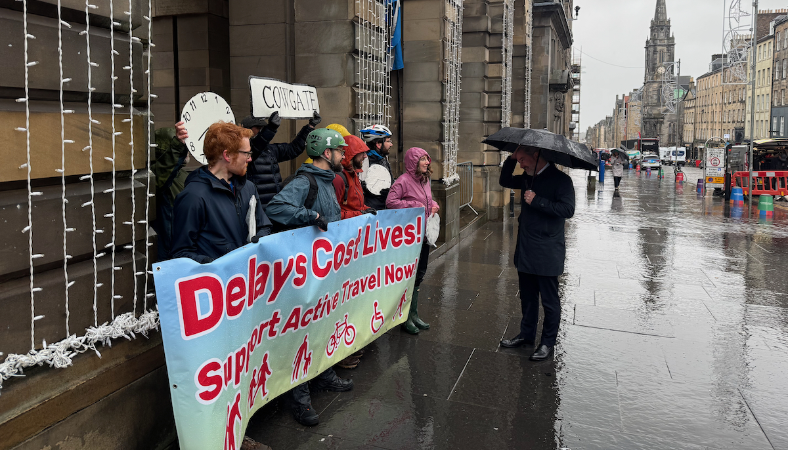

The City of Edinburgh Council's Transport and Environment Committee ('TEC') met last Thursday, 13th November 2025, we've summarised decisions and discussion either cycling or cycling-adjacent. For background and some extra bits not discussed at the meeting itself, see our article from last week going over the agenda.

🌐 Meeting Page & Agenda | 📺 Webcast Page | PDFs: 📑 Full Agenda Reports Pack | 💼 Business Bulletin | 📋 Work Programme | 🎙️ Deputations | 📑 Motions & Amendments
📄 Report [PDF] »
📺 Webcast - starting from 1h 7m
The Business Bulletin is home to more minor items that don't warrant a full report, or further updates on more significant past reports. Items below were briefly discussed with questions asked by assembled Councillors.
Cllr Kevin Lang asked whether the LTIP scheme is on track, or ahead of / behind schedule, and whether Ward Councillors would be kept informed on the progress of individual projects in their localities.
Officers responded that the current projects were progressing well and to schedule, with the team working closely with communities, keeping in touch with project sponsors, and following up after design work is done to check it meets the needs of the residents involved — with some delays due to traffic regulation order processes.
You can see the current list of Local Traffic Improvement Programme projects on Business bulletin pages 3-5 [PDF] »
ℹ️ Items from Page 6: Entrance to Holyrood Park Road and Strategy Update on Progress and Page 8: Layby Provision Close to Tram Line covered in our agenda review last week were not discussed at the meeting.
Link: Most recent project update »
Cllr Chas Booth asked what 'regular updates' on the project means in practice; and with ninety 'red' issues remaining, what the timetable for the resolution of the most pressing defects looks like.
Officers responded that 27 of the remaining 'red' issues are already in progress, with a number of the 'soft landscaping' works remaining waiting for the planting season to come around; and that the deadline for all 'red' items to be completed is the 31st of March 2026. Regarding updates, there is a project update every two months by Newsletter, with an update to the number of issues on the project's website every month.
Cllr Booth then asked about the pedestrian and cycle crossing wait times over London Road at the top of Elm Row, where with the reintroduction of the left turn for vehicles from Leith Walk along London Rd, users of the crossing are facing up to a ten minute wait. Officers response was that they will investigate the issue, and circulate findings to Ward Councillors.s
📄 Report [PDF] »
📺 Webcast - starting from 2h 23m
Deputations (which are taken at the very start of the meeting) from a number of parties on this item, each presenting both written submissions and in person on the day:
Deputations began with an erudite summary from the Edinburgh Bus Users Group ('EBUG'), whose written deputation (linked above) gives great context to the matter at hand and speaks to the impacts of vehicle traffic in bus lanes on public transport patronage. We're fortunate to have experienced advocates for the bus network in Edinburgh, where congestion can hamper what is otherwise a nationally award-winning public transport provision.
Following EBUG, Alex from Spokes gave a short verbal deputation backing up Spokes' written contribution, highlighting that the number of Private Hire Cars ('PHCs') in the city is currently uncapped, and has increased by 40% since 2018. He also mentioned for consideration the slow progress prioritising public transport and active travel infrastructure in recent years.
ℹ️ I made the rash assumption that the verbal deputations from the taxi and private hire bodies were in favour of PHCs in bus lanes as per their written submissions, and haven't watched them. Tempus fugit.
There were a couple of questions for Spokes after the verbal deputations.
Cllr Chas Booth asked about the number of Private Hire Cars being uncapped, and whether it was thought that the Council should have a conversation about this? (38m 25s in)
Alex responded that he believed the licencing committee may be looking at this - and that a conversation around this would make sense: as the Council looks to lower vehicle kilometers driven in the city, allowing an uncapped number of hire vehicles that drive a higher than average distance in a day makes a difference.
Cllr Lesley Macinnes asked a question regarding safety - could Spokes expand on the potential impact of having more vehicles in bus lanes for people cycling around the city? (39m 12s in)
Alex responded that "Additional vehicles make spaces more uncomfortable" not only in bus lanes, but also through bus gates for people cycling or walking, and that where we've seen vehicle numbers reduced by such measures, we wouldn't want to see those increase again and make those spaces less pleasant for people walking and cycling.
💬 The debate followed later, from 2h 23m onwards in the webcast.
Officers advised in their introduction, that the report and recommendations represent a 'holding position' rather than a final outcome. With major works going forward in a number of key arteries - Lothian Rd, George St, Dalry Rd to name a few - and a proposed 7-7-7 bus lane trial period, there will be a lot of change across the city affecting traffic and bus journeys in different ways. As such, the recommendation in the report is to hold off on the potential introduction of PHC vehicles into bus lanes, while the impacts of those projects is assessed.
Cllr Lang asked what, from officers' perspective, is the principal argument black cabs should be allowed in bus lanes but PHCs should not?
Officers advised this was a historic decision, with different legislation covering both types of taxi service - and that while it's acknowledged that PHCs play a part in the transport network, sheer numbers are the issue and there is a need to protect bus lanes for buses.
Cllr Lang followed up - if it's about the number of vehicles in bus lanes, why wouldn't you remove the right of black cabs to go in bus lanes?
Officers responded that this could be something the Council considers - this would need to be looked at seriously, as black cabs are considered part of the public transport network.
Cllr Lang then asked; What is the principle that sits behind the idea of allowing PHCs through certain bus gates?
The answer from Officers frustrated some repeated attempts for more detail, but essentially - bus gates will be looked at on a case by case basis, depending on the location - some bus gates really act as modal filters, being as they are not on a bus route. It would depend on the impacts assessed for a given location for each case in turn - which would be a multi-officer / multi-modal conversation (the officer being quizzed at the time deals with public transport only) as to the impacts.
There are examples where PHCs will be exempted that have already been decided - for example, the bus gate destined for Market St as part of the Meadows to George Street project has already been approved for PHCs, for accessing Waverley Station to drop off / pick up passengers.
Cllr Jenkinson added that calling them a 'bus gate' can create difficulties - these are really 'modal filters' or 'traffic filters'. He asserted that the council has stuck with terminology that people are familiar with, but we need to think about them in this respect.
Cllr Cuthbert asked about autonomous vehicles, with Waymo set to trial driverless taxis in London next year; Cllr Macinnes asked about differences between black cabs and PHCs, and also about the numbers of PHCs that are wheelchair accessible; the answer was that there's only a handful of wheelchair-accessible PHCs in circulation, but that this is down to decisions made by the licencing authority rather purely the choice of PHC operators.
📑 PDF: Conservative (page 10) and Green (page 11).
In contributions, Cllr Lang made a good point — in his backing of the continued exclusion of PHCs from bus lanes, he referred to the Council's 'Sustainable Transport Hierarchy', according to which 'public transport' is placed above 'taxis and shared transport' - and that there is indeed a distinction (where we see from the deputations, taxi and PHC firms argue that they are 'public transport' providers).
The Administration accepted the Green amendment and rejected the Conservative — which was pressed anyway — and was subsequently outvoted 9 votes to 2.
📄 Report [PDF] »
📺 Webcast - starting from 3h 32m
Deputations from:
A powerful deputation was given from representatives of Living Rent Lochend who recently launched a road safety campaign in the area.
This report is very comprehensive, and there were many varied questions and contributions on it.
One interesting bit of information right off the bat - the Council's Road safety team has doubled in size to 8 officers this year - and they are continue working to build capacity.
Cllr Cuthbert asked about statistics on page 416 - with accident stats from 2014 - 2018. Do we not have more up to date information?
Officers advised this period is used nationally in Scotland as the baseline for road safety comparisons.
Cllr Cuthbert followed up asking whether accidents for different transport modes are recorded differently? Officers advised that only types of death or serious injury not recorded are proven cases of suicide. Any other accident relating to pedestrians, cyclists, trams, even bus users falling onboard a bus, are all recorded in the same way.
Cllr Lang asked about the move away from PV2, which he was 'pleased to see'; but was interested in the rationale in it, as Councillors have always been told it's objective and required by ScotGov — what has changed?
Officers outlined that PV2 is a tool that will still be used, but that the Scottish Government's own road safety framework asks Officers to adopt the 'Safe Systems Approach' and be aiming for Vision Zero; and that to address unmet demand, the Council needs to modernise its approach and use a system that "focuses on a community and not a spreadsheet".
Cllr Lang asked regarding school travel plans - what is the timescale for all schools having been covered by this process?
The team are instigating a five-year process, prioritising schools without physical measures or travel plans already in place. They advised that they will deliver on any actions already agreed, but then revisit schools further down the list later on.
There was an interesting conversation about a list of locations set to receive Vehicle Activated Signs ('VAS') that light up when speed limits are being exceeded by an approaching vehicle, that can be moved around. Pavement-located 'NAL sockets' will be installed at multiple locations which provide a mounting point for signs that also powers them, but makes the sign removable - and then use of VAS will be 'kept fresh' by rotation between locations, and reintroduced where monitoring reveals continued issues with speeding.
Cllr Booth referenced the Edinburgh Critical Mass protest outside the meeting, and asked about progress on road safety in the Cowgate;
Officers said there was an expectation they would have street designs by March 2026; as well as continuing seasonal winter / summertime streets closures as planned.
Melt of the Meeting Award: 🏆 Cllr Whyte suggesting, in his seconding of the Conservative addendum, that in the evenings Morningside Rd might be a good candidate for being made 30mph again as a vital 'bus corridor'.
The Administration thanked officers for a 'comprehensive piece of work'; accepted the Liberal Democrat addendum (amended to drop a matching point about School crossing guards found in Green position), and the Green addendum in full; and rejected Conservative addendum - passing with the usual 9 votes to 2.
📺 Webcast - starting from 4h 21m 51s
📄 Report [PDF] »
After our open letter with Spokes and others regarding what we perceived as TRO Subcommittee overreach earlier in the year, we saw the 'saving' of the Travelling Safely schemes in the North, West and East of the city after intervening as they received something of a second hearing and near-death-by-delay at the Subcommittee responsible for making statutory orders.
Following a dysfunctional run of recent meetings, it's good to see that internal scrutiny at the council will bring about not only improvements to guidance and clarity of remit around the Subcommittee's role, but also look to improve the TRO advertisement process to make it more friendly to the general public. As mentioned at the meeting, this is all the more vital as certain projects skip an initial consultative phase and move directly to TRO's own consultation phase.
This item saw a verbal deputation from New Town & Broughton Community Council from 11m 54s onwards, in which they expressed frustration at not being able to provide feedback or comment on items coming to TRO Sub, even through Councillors. We will leave the nuance of whether Community Councils are within their remit to adopt a 'position' for another day...
Cllr Macinnes asked about the next Council benchmarking exercise, to identify good practice from other Local Authorities, and what kind of factors are being looked at?
Officers confirmed this is still under development, but is essentially a process to look at what other authorities do, in terms of TRO objections, delegated powers and the threshold for items coming to committee for decisions on taking forward - seeing how this is dealt with elsewhere. In follow-up, Cllr Macinnes highlighted a mention of comparisons with Glasgow City Council in the Green amendment, particularly with a view to moving faster - and Officers confirmed Glasgow was one of the authorities being looked at in this exercise.
🗳️ The Administration moved the report — including the circulation of a briefing note about the official Scottish Government position regarding TRO and RSO processes — and accepted the Liberal Democrat amendment (page 20) and the Green amendment (page 21) (sans paragraph 3), which then passed without requiring a vote.
📄 Report PDF »
📺 Webcast - starting from 4h 54m 44s
There are still outstanding questions on this popular walking and cycling link - an unadopted path across land owned by the Earl of Morton, behind the site of the former Longstone Inn - which to date has been surfaced and street-lit seemingly by the City of Edinburgh Council, and where a large sinkhole is currently being addressed with remedial work, and structural measures on a retaining wall in the river that bends by it.
Council Officers are not keen to 'adopt' the path, and become liable for its maintenance going forward. These questions and many more have been raised by Longstone Community Council, and hopefully will lead to the council seeing sense and preserving this inter-community link for years to come - especially as an amendment by the Green group (page 25) to request Officers engage with ward councillors and work to safeguard the future of the path went solo at the voting, with the Administration unwilling to incorporate its calls for a further conversation and report; and sadly was defeated in a close call of 6 votes to 5.
📄 Report PDF »
📺 Webcast - starting from 5h 12m 42s
Cllr Lang asked of Officers - What should the transport & environment committee think more about - or think differently about - based on progress so far?
CEC Officers: "Transport is the second largest area of emissions for Edinburgh; therefore the City Mobility Plan has a really key role in the way in which we decarbonise the city; the one highlight we make in the paper in that regard, is that we know that additional resource into transport, into delivering schemes within the City Mobility Plan will therefore help us continue with the decarbonisation of the city. So... it is a consideration for elected members to make in as a part of their budget setting as to how best to support transport schemes."
Corporate Director of Place, Gareth Barwell, added that the Climate Strategy update broadly says the Council has good strategies already in place (though, editor's note, very much early days!) like the City Mobility Plan - and it's good that rather than producing new strategies, the Council are instead doubling down on the ones they've committed to.
A lot of conversation was had at this point around regional aspects — working with neighbouring authorities — including the need for a wider, regional transport strategy. Gareth Barwell also described making what could be perceived as 'loss leading' investment in public transport and active travel routes to offer concrete alternatives to car travel (rather than expecting modal shift based on promises of infrastructure and improvements).
A Green amendment (page 27) reads:
Thanks officers for the report and ongoing work to tackle the climate emergency;
Notes that Transport continues to be the second largest emissions sector in the city,
representing 32% of the city’s emissions (para 4.10), and that more progress could be
made in reducing transport emissions through additional funding (para 4.15);Therefore agrees that as part of the current budget process, officers will offer
suggestions for additional revenue raising which could allow improved emissions
reductions in transport, for each political group to consider as part of their budget-setting
process.Welcomes the ‘supporting areas’ workstreams set out in paragraph 4.28, in particular
the ‘Sustainable Living’ proposal which will, amongst other things, give citizens an
opportunity to explore sustainable forms of transport around the city that might best suit
their needs, and agrees to provide further information on this work, through a written
briefing or business bulletin update as appropriate, to committee members.
This Green amendment won out against the Administration's position, having been voted in by committee Councillors with seven votes to four.
At this point in the meeting, the day marched on past the 5pm mark - at which point proceedings 'go formal', with minimal debate, question / answer or contributions. As such, the remaining items were not so much talked about, as voted onwards.
This item was agreed without the need for a vote.
🚲 This item included an excellent written deputation from Spokes, at page 21) of the Deputations PDF
Alongside some more minor points, an amendment by the SNP (page 29) accepted by the administration contained:
"Requests that council officers engage with Midlothian colleagues to bring forward immediate and medium term regional public transport initiatives to reduce reliance on private vehicle commuting journeys entering the City of Edinburgh. This includes working with Midlothian council to identify and develop potential cross boundary regional public transport connections and corridors serving South East Edinburgh communities and Midlothian communities.
Committee requests that Council officers report progress on cross boundary public transport initiatives via the business bulletin and in planned reports."
A much stronger amendment from the Greens (from page 30) pointed out the load-bearing assumptions in the 'improvements' building another major road claims to deliver, including the reliance on the completion of other projects to deliver any potential benefit.
It would have been good to have seen some debate around this issue, as induced demand is a very real consequence of any and all road building so this project is a rather unforgiveable footgun, especially in a climate crisis - even it is flanked by active travel infrastructure.
Sadly, post-5pm at TEC, that was not to be - and the original motion (with SNP amendment) was passed by 9 votes to 2, with the Green party members against.
The Transport & Enviroment Committee will next meet on Thursday, 29th January 2026.